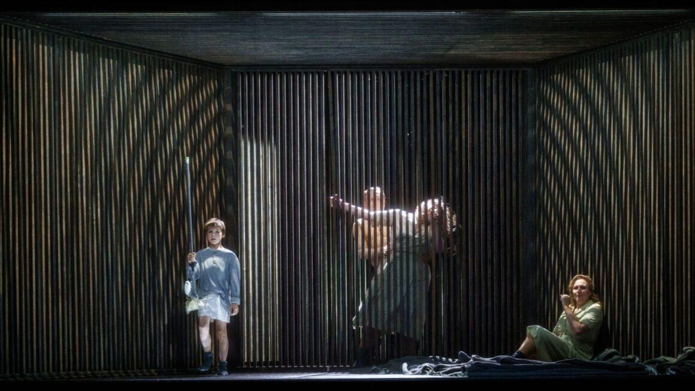
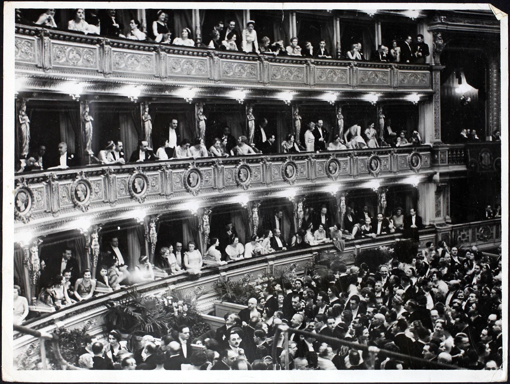
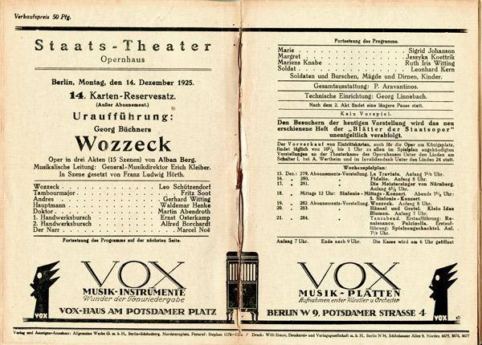

Berlin, 1925 — the premiere of Wozzeck
The room is already divided before the music begins.
You can feel it in the pauses between conversations—in the way people sit slightly too upright, as if bracing for something they’ve been warned about.
Alma Mahler does not rush to her seat. She takes in the room first.
Berlin is not Vienna. It does not pretend continuity.
The audience
There are factions, though no one names them.
Those who expect scandal
Those who hope for it
Those prepared to dismiss it
She recognizes types quickly. She has spent too long in rooms like this not to.
Names pass in low voices:Alban BergArnold Schoenberg
Not admiration, exactly. Not hostility either.
Something sharper: anticipation mixed with resistance.
The beginning
No overture in the way she expects.
The sound arrives already unsettled.
Not melody leading form—but fragments assembling themselves in real time. The orchestra doesn’t guide. It presses.
She leans slightly forward.
This is not incompetence. It’s intention.
On stage
The story refuses distance.
A soldier. Poverty. Humiliation. Madness.
No myth. No transcendence. No Wagnerian escape—no matter how much Berlin still pretends to inherit Richard Wagner.
The staging is stark. Angled. Compressed.
Everything closes in.
The music
It doesn’t resolve where it should.
Phrases break. Return altered. Harmonics sit uneasily against each other.
She recognizes the lineage—Schoenberg’s shadow is there—but this is something else. More theatrical. More immediate. Less concerned with purity, more with effect.
It is, she realizes, dangerous in a different way.
Not because it shocks.
Because it refuses comfort.
The room reacts
Not loudly.
That would be easier.
Instead:
A shift in posture
A program lowered, then raised again
Someone not applauding, then reconsidering
Attention tightens.
No one is indifferent.
Alma’s position
She has lived through revolutions in music before.
She has seen admiration turn into doctrine, and doctrine into stagnation.
This feels less stable.
Not a new system—but the absence of one.
The final moments
When it ends, there is a pause that lasts too long to be accidental.
Then applause.
Real, but uneven.
Some lean into it. Some hold back. Some watch the others before deciding.
What she understands
This will not remain here.
Not in this room. Not in this form.
It will move—changed, argued over, resisted, adopted.
But something has shifted tonight.
The feeling that remains
As the audience rises, conversation begins immediately—faster than usual, more urgent.
No one agrees on what they’ve heard.
But everyone agrees it cannot be ignored.
The line to carry
She leaves with a single, quiet certainty:
This is not the future of music.It is the end of believing there is only one.
Yes—you can use them, but with an important distinction:
The Firebird (1910)
Petrushka (1911)
By the 1920s, these weren’t new or shocking—they were established repertoire of the Ballets Russes.
So if you use them, the tone of the scene changes:
not scandal… but prestige, memory, and refinement